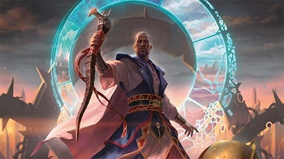
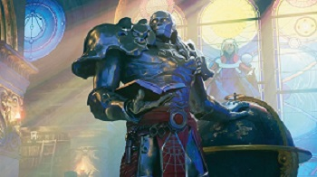

Urza
One of the earliest know planeswalkers in the Magic the Gahtering lore, Urza is arguably the smartest and most crafty planeswalkers in the universe. During the events of Brother's War, Urza and his brother Mishra headed two opposing armies and begun a tragic battle, ending in Urza deploying machine that destroyed both armies, as well as Mishra. After this war, Urza would start a life long path of vengeance against the Phyrexians, a race of living machines that had corrupted Mishra.

Teferi
During Urza's path of vengeance against the Phyrexians, Urza created a vast school of magic and Technology, known as Tolaria - the Academy. One of Urza's most prized students would attend this academy, going by the name Teferi. Teferi was a young sorcerer who had a considerable amount of magic potential, but was still very immature. Teferi's attitude would change pretty quickly as an attack on the Academy by the Phyrexians would leave Teferi in slow-time bubble caused by the destruction of a time machine. Urza and two other students were able to free Teferi from this slow-time bubble, but the experience would humble and instill the want to be more powerful in him. Teferi would go on to be one of the strongest planeswalkers after Urza's death.

Karn
When Urza built Tolaria, Urza also worked to keep the remnants of a former protege alive. To accomplish this, he created a giant silver golem and infused it with his protege's heartstone creating the sentient golem, Karn. Karn would become a valuable tool for Urza, as his silver body would allow him to withstand entering temporal rifts without damage occurring. During his time away from Tolaria, Karn would create his own mathematical perfect plane, known as Argentum. However, this would be corrupted soon by the Phyrexians and renamed Mirrodin. Well after Urza's death, Karn takes over as the lead of Tolaria and is even mounting the war against the one again rising threat of Phyrexians.